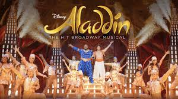
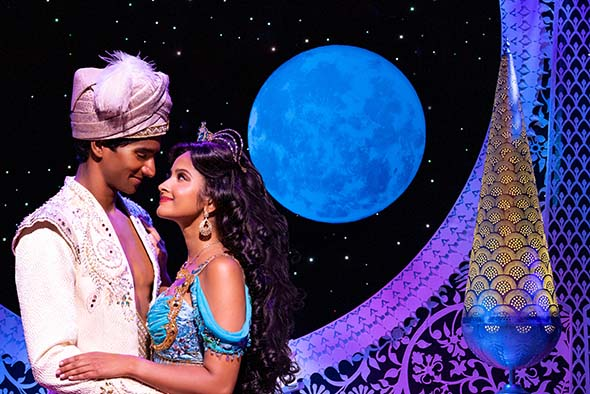

Aladdin Broadway Musical

Aladdin is a Broadway musical based on the 1992 Disney animated film of the same name with a book by Chad Beguelin, music by Alan Menken and lyrics by Howard Ashman, Tim Rice and Beguelin. It resurrects three songs written by Menken and Ashman for the film but not used, and adds four songs written by Menken and Beguelin.
Set in the fictional Arabian city of Agrabah, the story follows the familiar tale of a poor young man who is granted three wishes by a genie in a lamp, which he uses to woo a princess and to thwart the sultan's evil Grand Vizier.
The shows music was written by 8-time Oscar-winner, Alan Menken, including "A whole new world", which won the Academy Award for the Best Original Song.